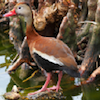
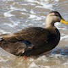
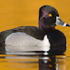

<!DOCTYPE html>
<html>
  <head>
    <meta charset="utf-8">
    <meta name="viewport" content="initial-scale=1, maximum-scale=1, user-scalable=no, width=device-width">
    <title></title>

    <link href="lib/ionic/css/ionic.css" rel="stylesheet">
    <link href="css/style.css" rel="stylesheet">

    <!-- IF using Sass (run gulp sass first), then uncomment below and remove the CSS includes above
    <link href="css/ionic.app.css" rel="stylesheet">
    -->

    <!-- ionic/angularjs js -->
    <script src="lib/ionic/js/ionic.bundle.js"></script>

    <!-- cordova script (this will be a 404 during development) -->
    <script src="cordova.js"></script>

    <!-- your app's js -->
    <script src="js/app.js"></script>
  </head>
  <body ng-app="starter">
         
    <ion-nav-view animation="slide-left-right"></ion-nav-view>
    
    <script id="home.html" type="text/ng-template">
    <ion-view>
      <ion-content>
      
        <div class="list">
          <div class="item item-divider">
            Marsh
          </div>
          
          
          
          
          <div class="item item-divider">
            Beach
          </div>
          <div class="item item-divider">
            Forest
          </div>
        </div>
        
        <div class="padding">
          <a class="button button-block button-calm" href="#/about">
            Start
          </a>
        </div>
      </ion-content>
    </ion-view>  
    </script>
    
    <script id="about.html" type="text/ng-template">
    <ion-view title="">
      <ion-content padding="true">
        
        
        
        <p>Tap a bird for details</p>
        <div class="bar bar-footer bar-stable">
          <a href="" class="button">Play</a>
        </div>
      </ion-content>
    </ion-view>
    </script>
  </body>
</html>
